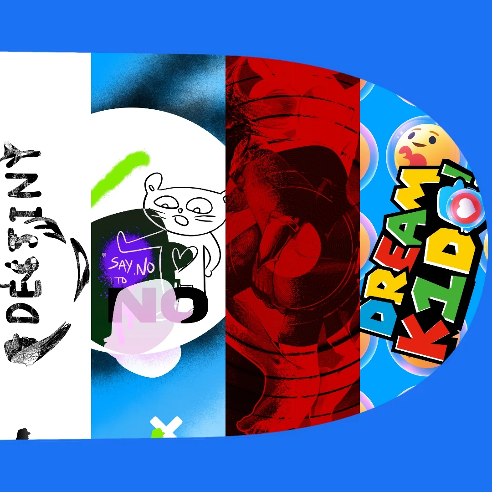
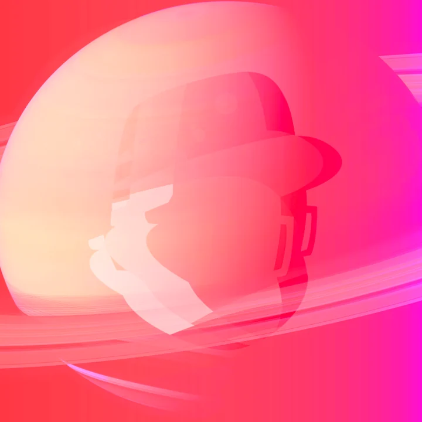
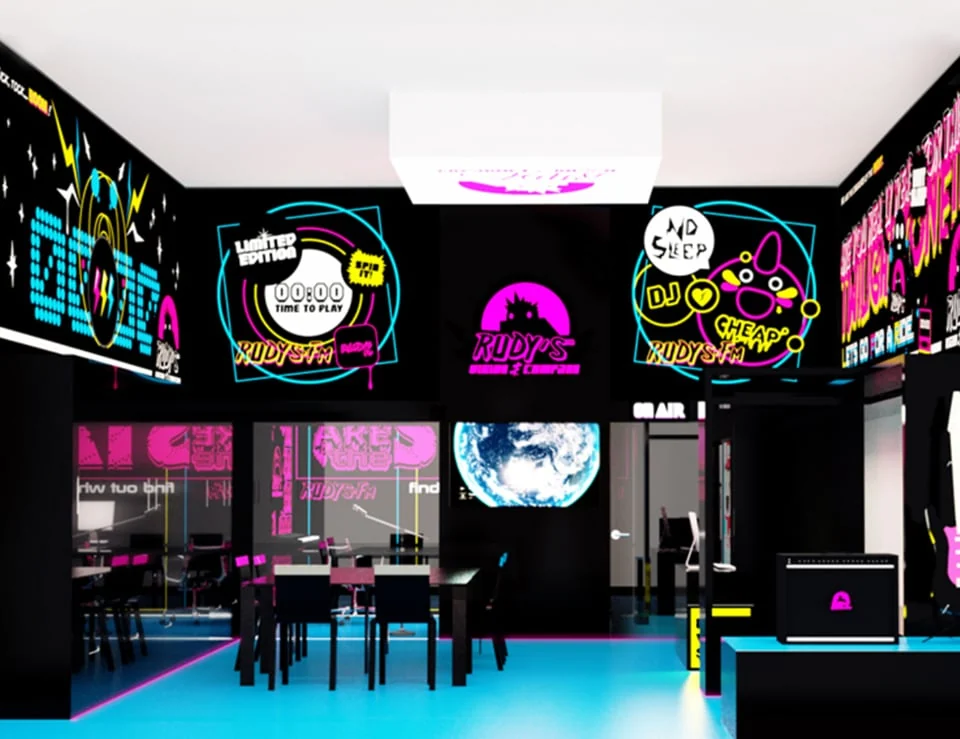

RUDY HARTT
Design, film &
everything between.

Graphics in motion ↗
A different perspective ↗
Identity, into space ↗01 / THE PORTFOLIO
A selection across disciplinesSelected work.
02 / A LITTLE CONTEXT
Curiosity is the common thread.One practice.
Many possibilities.
I’m Rudy, a multidisciplinary designer and filmmaker working across visual identity, digital experiences, merchandise and moving image.
My work connects graphic design with a love of character, cinema and the unexpected. I’m interested in how an idea changes as it moves between a screen, an object and a physical space.
My background includes design studies at Central Saint Martins, film studies at London College of Communication, a residency at the Victoria and Albert Museum, and creating the RUDY’S retail and recording studio concept in Prague.
Start a conversation ↗Brand identities
Digital & interface design
Print & publications
Merchandise & packaging
Filmmaking & editing
Animation & motion
Sound design
Visual storytelling
V&A · Artist in residence
Hartt Olivier · Graphic & digital design
RUDY’S · Founder & lead designer
Independent filmmaking
03 / THE NEXT CONVERSATION
Have something
in mind?
For projects, collaborations
or an interesting idea.